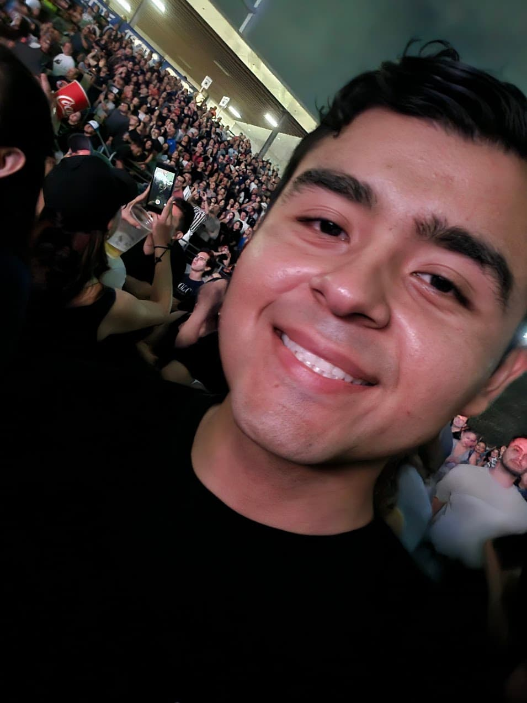

Abraham Lopez | WDD 130
I'm from Mexico, I'm 21 years old. This is the first time I create a website. I have been a member of the Church of Jesus Christ of Latter-day Saints my whole life. I really love the gospel. My favorite temple is San Diego California Temple. I served in the Honduras San Pedro Sula mission from 2022 to 2024.
I love to play sports, even if I'm not very good at them. My favorite sport is swimming, but I also like to play basketball, soccer, volleyball and some others. I also like to learn new things in topics like technology and science.
I consider myself a simple person who enjoys the little things in life. Simplicity brings me joy. This also makes me someone who likes to find a logical solution or explanation to things without overcomplicating them.
I love videogames, even if I don't play much now I always keep my launchers installed whenever there is opportunity to play.
As many members of the Church of Jesus Christ of Latter-day Saints and a returned missionary, my main goal is eternal life, marry in the temple and have a family forever. I also want to keep learning and improving myself in all aspects of my life to achieve my eternal potential as a child of God.